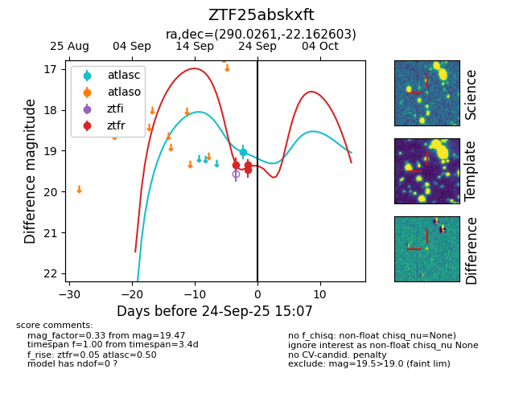
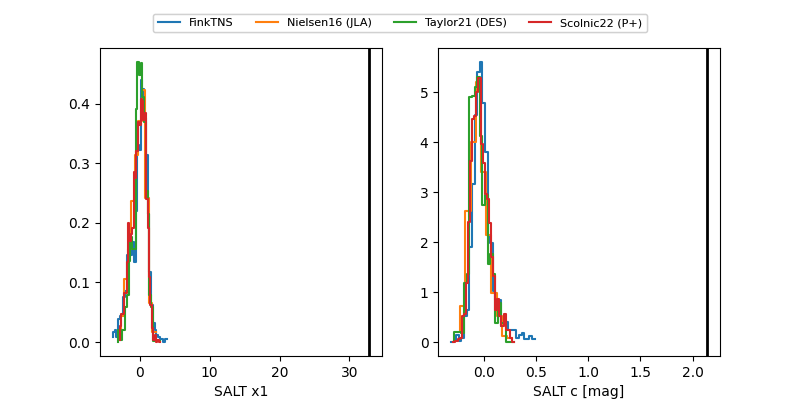

FINK: ZTF25abskxft
Lasair: ZTF25abskxft
ALeRCE: ZTF25abskxft
ZTF25abskxft (ztf,fink)
equatorial (ra, dec) = (290.0261,-22.16260)
galactic (l, b) = (15.8110,-15.95253)


last atlasc=19.04, ztfr=19.47
1 atlasc, 3 ztfr detections